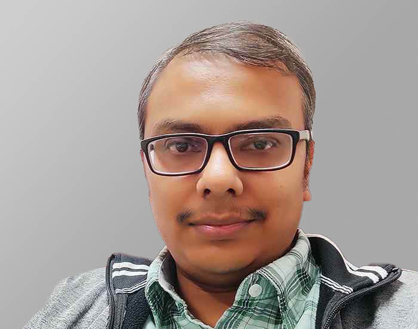
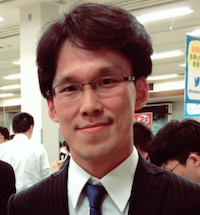
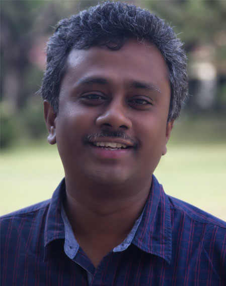
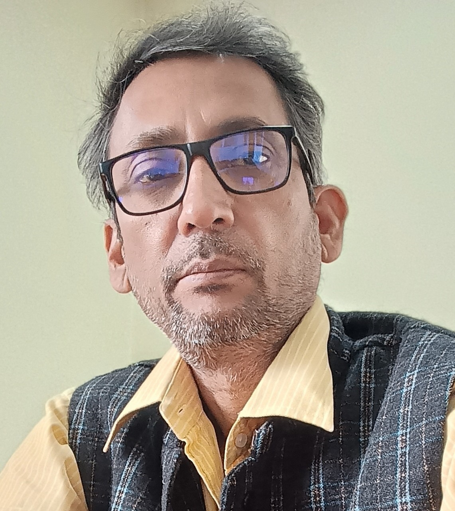
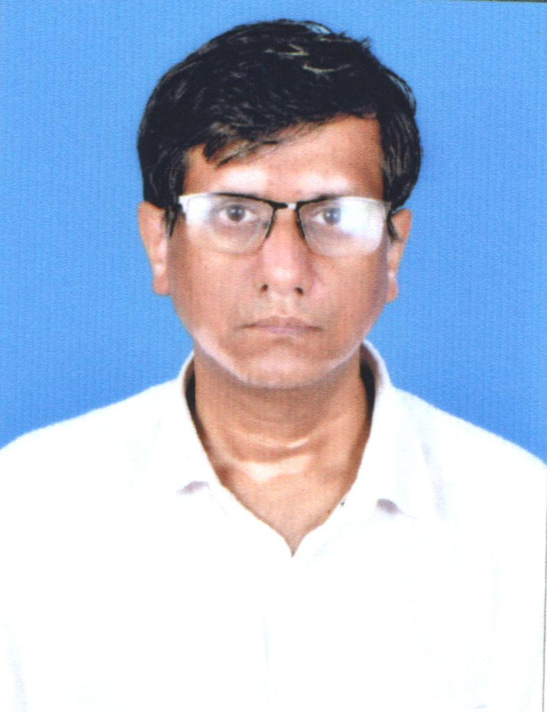
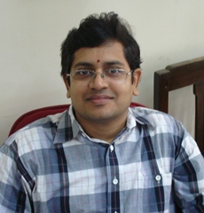
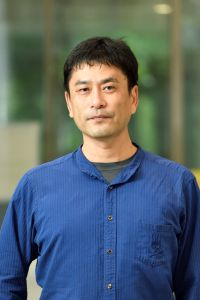
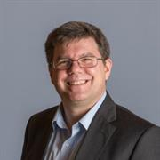
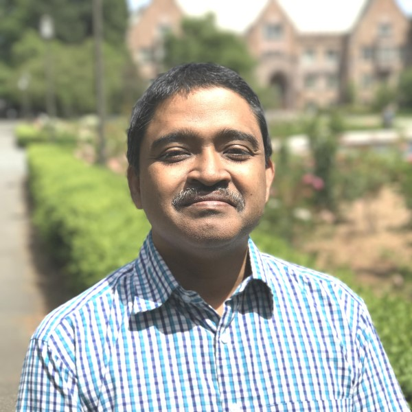

Prof. Aloke Paul
Indian Institute of Science, Bengaluru
Experimental diffusion studies and measurements meet our PINN and numerical inverse methods, linking diffusion profiles to composition-dependent transport properties.
Ideas grow when we explore them together, through experiments, theory and computation.
Indian Institute of Science, Bengaluru
Experimental diffusion studies and measurements meet our PINN and numerical inverse methods, linking diffusion profiles to composition-dependent transport properties.

IIT Kanpur
Rajdip’s perspective on thermal grooving meets our work on active parameter tracking, alongside shared interests in phase-field modeling and microstructure evolution.

Tokyo University of Agriculture and Technology
Shared interests in phase-field modeling, materials simulation and data assimilation connect physical models with observations.

IIT Hyderabad
Experimental ferroics and device physics meet our ferroelectric modeling, connecting domain evolution and electromechanical coupling with measured behavior.

Indian Institute of Science, Bengaluru
Ferroelectric, piezoelectric and structure–property perspectives connect with our modeling of ferroic domains and electromechanical behavior.

IIT Hyderabad
Phase transformations, materials processing and characterization connect with our phase-field studies of microstructure and nanoparticle morphology.

IIT Bombay
Our ferroelectric modeling perspective meets Guru’s expertise in elastic stress effects. Shared experience in phase-field modeling gives us different ways to question and interpret the same physics.

National Institute for Materials Science, Japan
Computational structural materials and first-principles perspectives connect with our interests in microstructure, elasticity and multiscale modeling.

Deakin University, Australia
Manufacturing and materials-processing perspectives connect with our microstructure simulations and process–structure models.
University of Münster, Germany
Diffusion measurements and transport physics connect with our efforts to infer and understand composition-dependent diffusion properties.

IIT Hyderabad
Optimization and surrogate modeling connect with our phase-field simulations, process–structure relationships and physics-informed learning.
Deakin University, Australia
Machine learning and neural-operator methods connect with our phase-field models, bringing physical constraints into models of microstructure evolution.
Collaboration begins when we bounce ideas off one another. Different experience can reveal an assumption we had overlooked or suggest a question we would not have asked alone. Even apparently similar expertise can lead to very different ways of seeing a problem.
The connections above are starting points, not fixed divisions of work. Our shared interests evolve through discussion, experiments and modeling. The aim is to develop ideas together that none of us would have reached in isolation.